Academic identity · Logo concepts
Mathematics & Data Science
A competition entry for an unofficial event logo, created after my department became Mathematics and Data Science.
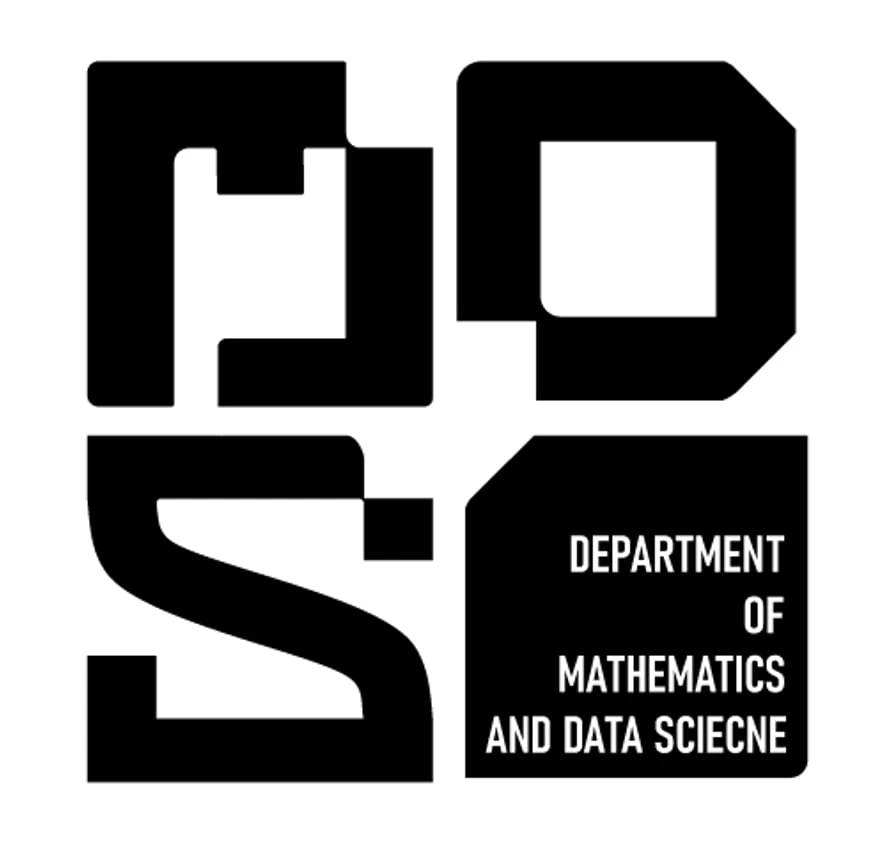
About the project
A new name.
A new event identity.
My department at East West University held a logo competition after changing its name from Mathematics and Physical Science to Mathematics and Data Science. The brief called for an unofficial logo that could be used at departmental events.
I developed this entry in response to that brief, exploring how the new departmental initials could become a recognisable visual identity for those occasions.
The lettering translates the university’s architectural forms into a modular, block-based mark for the Department of Mathematics and Data Science. Squared counters and strong vertical strokes connect the initials to the building’s visual rhythm.
The development sheets break down the letterforms and their architectural references before bringing them together in the final composition. A second concept explores an arched framework with academic and mathematical imagery, extending the presentation into colour variations.
- Architecture-led lettering
- Modular construction studies
- Alternative concept and colour variations
Process & applications
The full presentation.
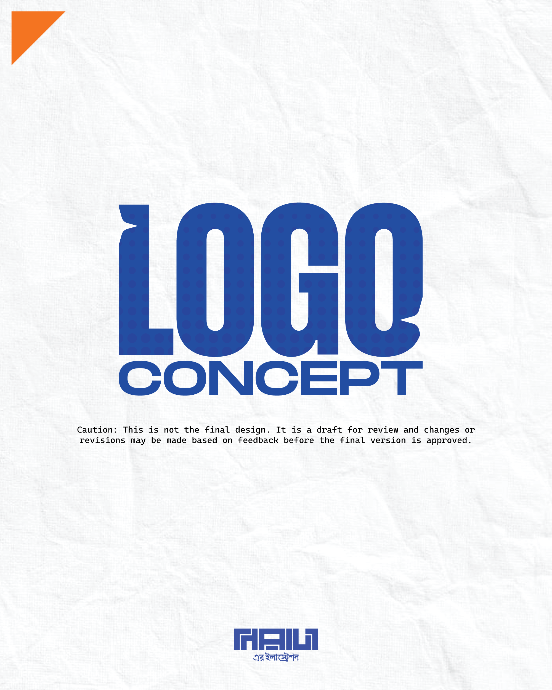
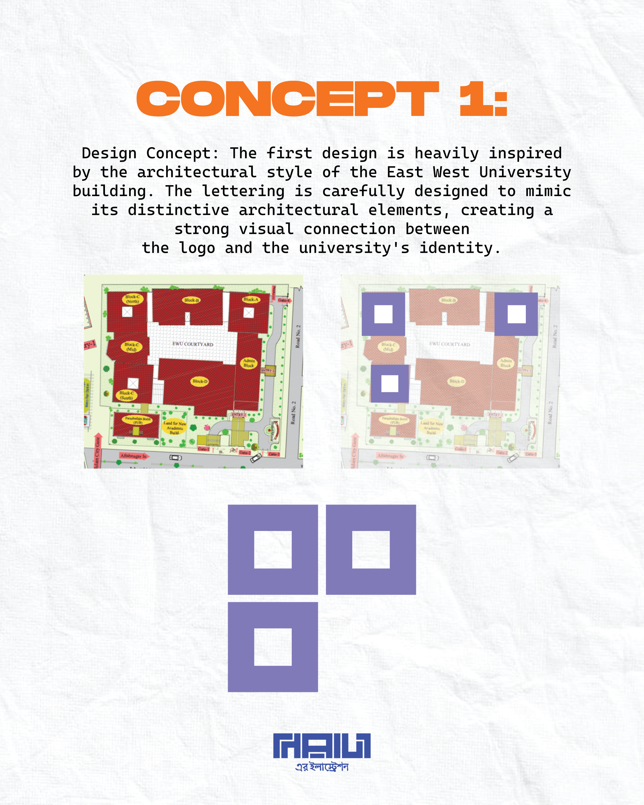
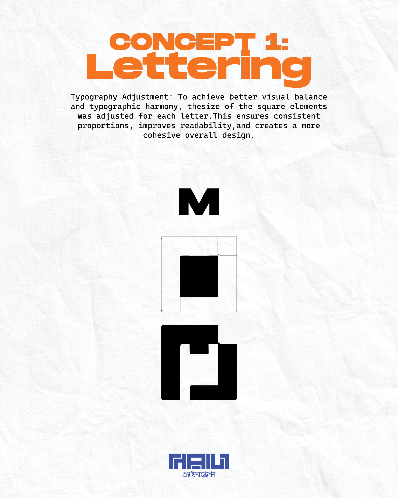
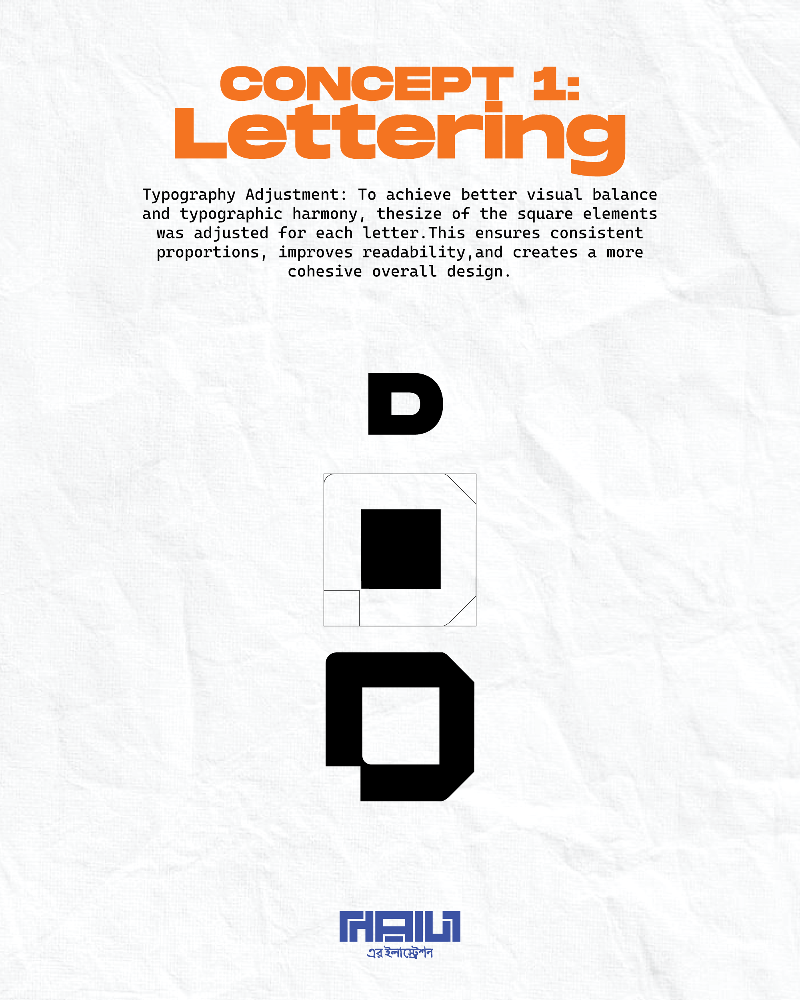
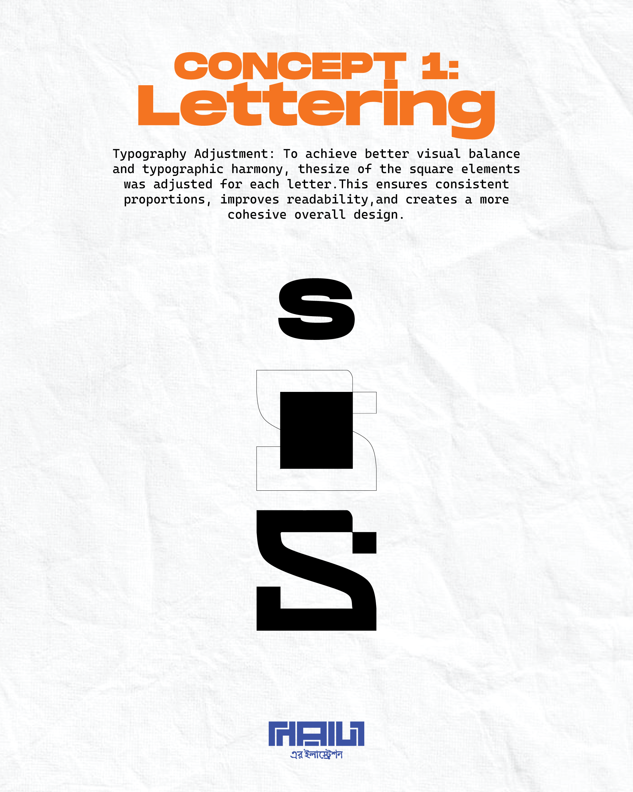
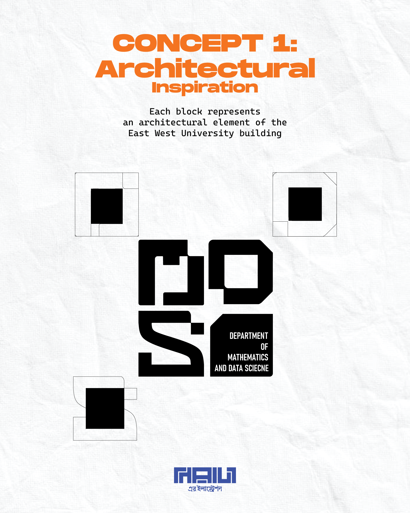
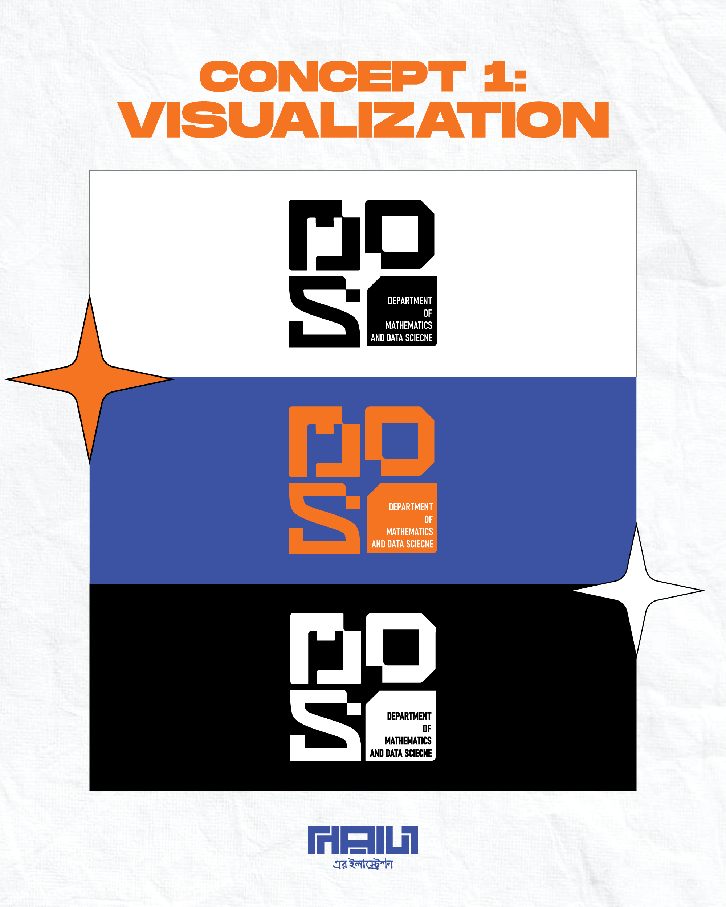
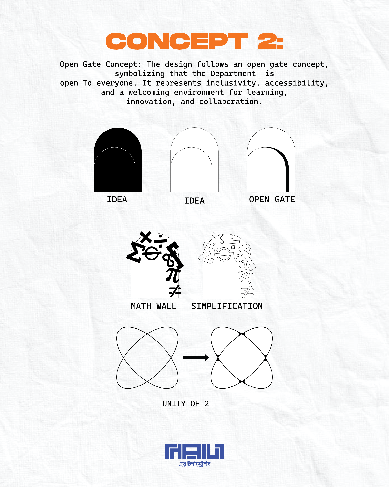
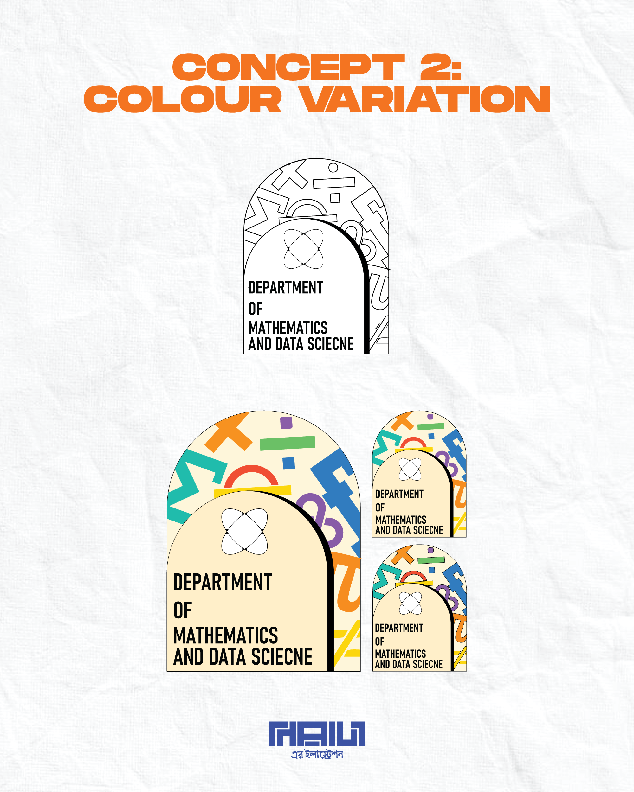
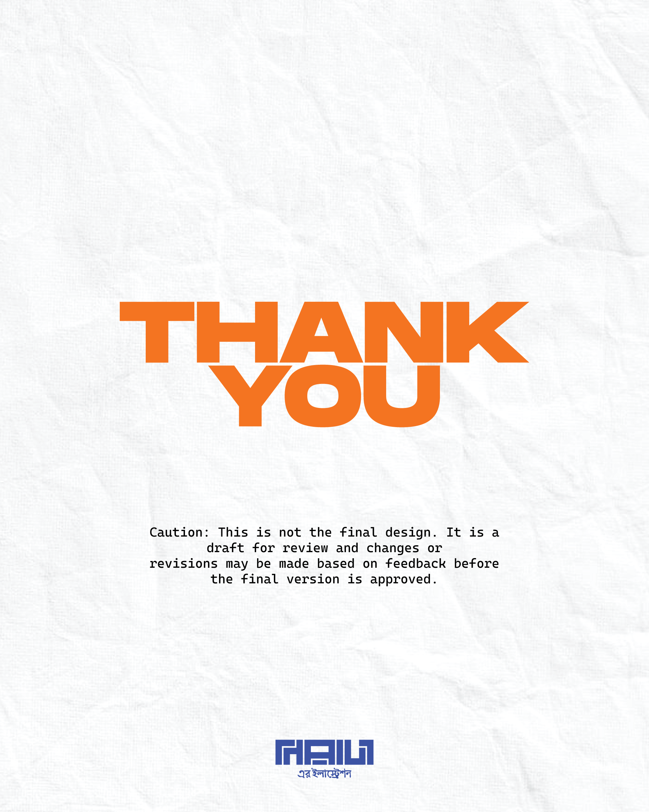